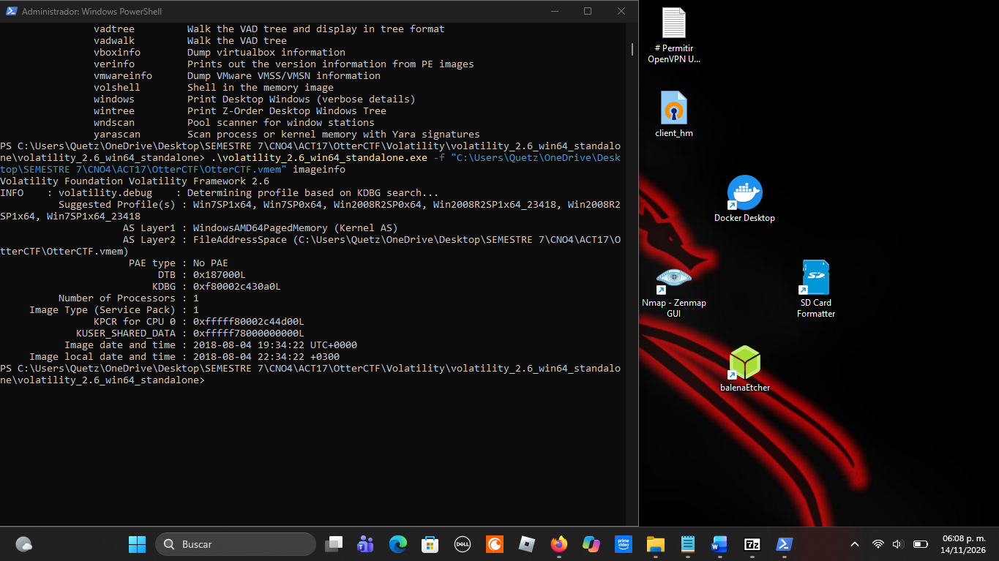
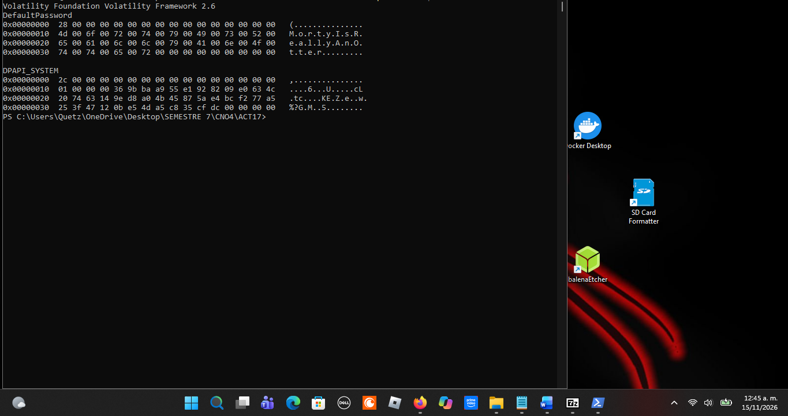
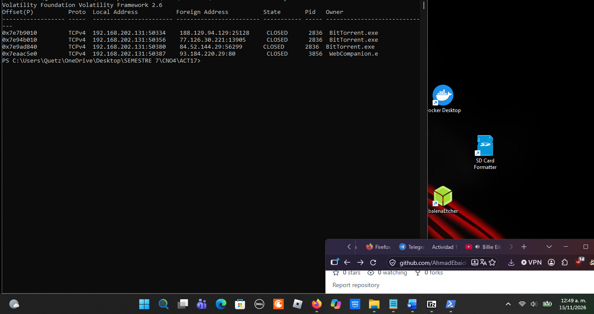
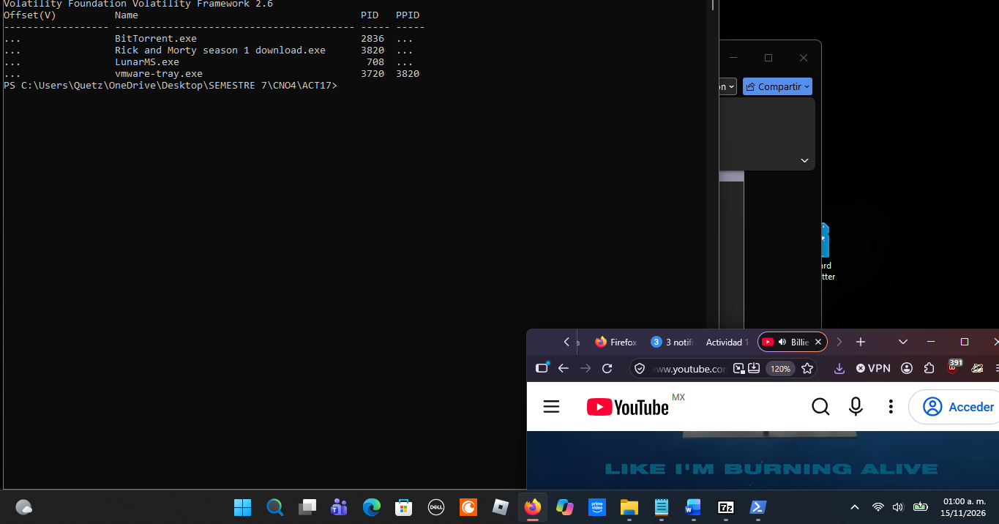
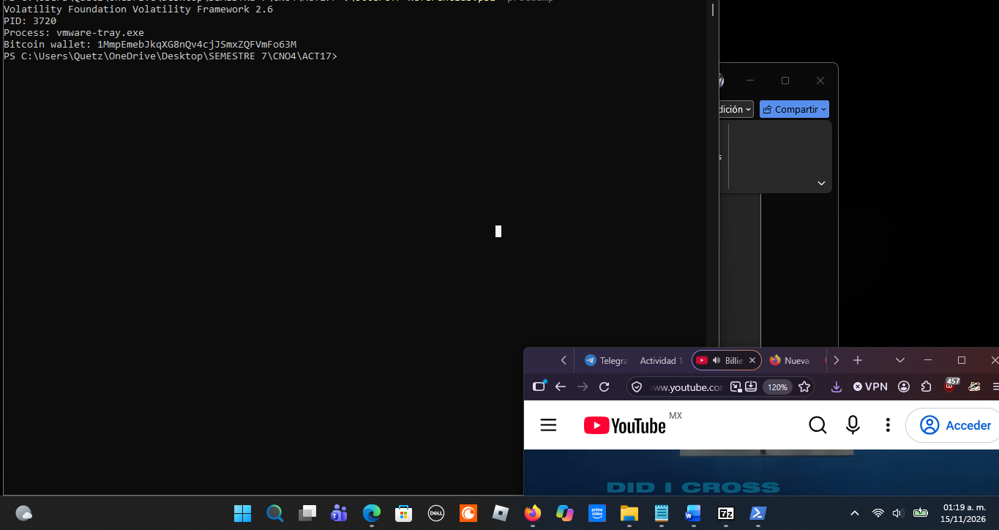

Actividad 17 · La memoria del crimen
Análisis forense de memoria RAM con Volatility Framework 2.6
Actividad 17 · La memoria del crimen: Análisis forense de memoria RAM
Introducción
En esta actividad se realizó un análisis forense de un volcado de memoria RAM correspondiente al reto OtterCTF, utilizando Volatility Framework 2.6. Mediante diferentes plugins se examinaron estructuras del sistema operativo, procesos activos, conexiones de red, credenciales y artefactos digitales. El propósito fue reconstruir parte de la actividad realizada en el equipo comprometido e identificar evidencias relacionadas con el incidente.
Metadatos y Registro del Caso
- Actividad: 17 – La memoria del crimen
- Reto: OtterCTF 2018
- Archivo analizado: OtterCTF.vmem
- Herramienta: Volatility Framework 2.6
- Perfil: Win7SP1x64
- Sistema operativo: Windows 7 SP1 de 64 bits
- Tipo de análisis: Análisis forense de memoria RAM
- Examinador: Rodriguez Jimenez Quetzal Olin
Desarrollo y Evidencia Fotográfica
1. Identificación del perfil de memoria
Se utilizó el plugin imageinfo para identificar las
características del volcado de memoria y determinar el perfil
adecuado para realizar el análisis.

2. Extracción de credenciales y secretos del sistema
Mediante los plugins hashdump y lsadump
se examinaron los hashes de las cuentas locales y los secretos
almacenados por Windows, identificando información relacionada
con la contraseña del usuario.

3. Análisis de conexiones de red
Se ejecutó el plugin netscan para recuperar
conexiones de red, identificar direcciones IP locales y remotas,
puertos utilizados y procesos asociados con la comunicación.

4. Identificación de procesos sospechosos
Se utilizaron los plugins pslist, pstree
y cmdline para examinar los procesos del sistema,
sus relaciones padre-hijo y las rutas desde las que fueron ejecutados.

5. Recuperación de la cartera Bitcoin
Se examinó la memoria del proceso sospechoso mediante
memdump y la herramienta complementaria
strings, buscando cadenas relacionadas con el
ransomware y recuperando la dirección de la cartera Bitcoin.

Objetivo
Aplicar técnicas de análisis forense de memoria RAM mediante Volatility Framework 2.6 para identificar información relevante de un equipo comprometido, recuperar artefactos digitales y reconstruir actividades relacionadas con un posible incidente de seguridad.
Conclusión
La actividad permitió comprender la importancia de la memoria RAM como fuente de evidencia digital durante una investigación forense. Mediante Volatility fue posible examinar procesos, conexiones de red, información del Registro de Windows y datos relacionados con el usuario y el ransomware. La recuperación de estos artefactos demuestra que el análisis de memoria puede aportar información fundamental para reconstruir incidentes de seguridad e identificar indicadores de compromiso que podrían no encontrarse fácilmente en el almacenamiento convencional.
Fuente Principal
OtterCTF 2018 · Reto de análisis forense de memoria. Volatility Foundation · Volatility Framework 2.6. Laboratorio de Informática Forense (LIF) · Universidad Politécnica de San Luis Potosí (UPSLP) · CNO IV.